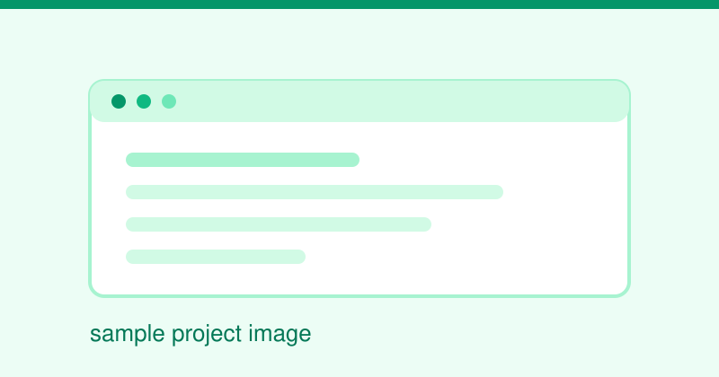

This Website

This very site is the first project. It is a few hundred lines of shell and awk that turn Markdown into plain HTML — no build tools, no dependencies, no lock files.
Why?
Static sites are wonderfully boring. There is nothing to patch, nothing to keep running, and the whole thing fits in a Git repository that any free host — GitHub Pages, DigitalOcean, Netlify — will serve without complaint.
How it works
1. Drafts live in content/. 2. build.sh reads config.sh for colours and site details. 3. Each Markdown file becomes a page in OUTPUT_DIR. 4. Static assets are copied over unchanged.
Try it
Change a colour in config.sh, or add a post to content/blog/, and run the build script. The blog has more details.